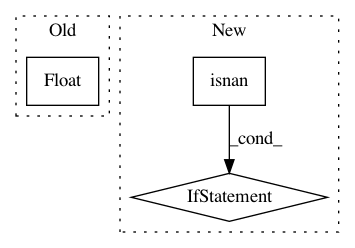

7f6cd7f219c8c7f77b8e49e92f26ffae9229d698,src/math_util.py,,logsumexp,#Any#,53
Before Change
def logsumexp(array):
m = max(array)
if m == float("inf"):
return float("inf")
elif m == -float("inf"):
return -float("inf")
After Change
// m = -inf means addends are all zero, hence so is sum, and log is
// -inf. But if +inf and -inf are among the inputs, or if input is
// NaN, let the usual computation yield a NaN.
if math.isinf(m) and min(array) != -m and \
all(not math.isnan(a) for a in array):
return m
// Since m = max{a_0, a_1, ...}, it follows that a <= m for all a,
// so a - m <= 0; hence exp(a - m) is guaranteed not to overflow.
return m + math.log(sum(math.exp(a - m) for a in array))
def logmeanexp(array):
inf = float("inf")
In pattern: SUPERPATTERN
Frequency: 3
Non-data size: 3
Instances
Project Name: probcomp/bayeslite
Commit Name: 7f6cd7f219c8c7f77b8e49e92f26ffae9229d698
Time: 2016-03-16
Author: riastradh+probcomp@csail.mit.edu
File Name: src/math_util.py
Class Name:
Method Name: logsumexp
Project Name: pfnet/optuna
Commit Name: 9a8973bc7b87ecff93c89bb58638c9940cd5ceb3
Time: 2018-08-03
Author: toshihiko.yanase@gmail.com
File Name: pfnopt/integration/chainer.py
Class Name: ChainerPruningExtension
Method Name: __call__
Project Name: dickreuter/Poker
Commit Name: 740a2e4b476177062d924df99b7ecff27d3e168e
Time: 2016-10-10
Author: dickreuter@yahoo.com
File Name: decisionmaker/decisionmaker.py
Class Name: Decision
Method Name: preflop_override